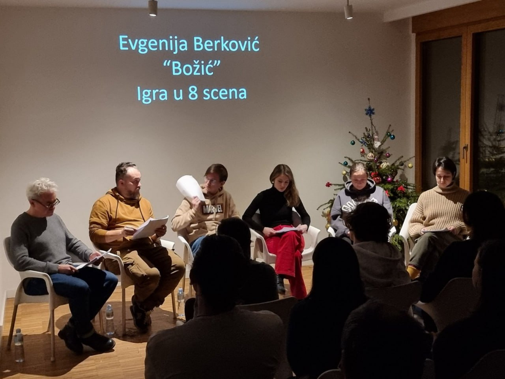
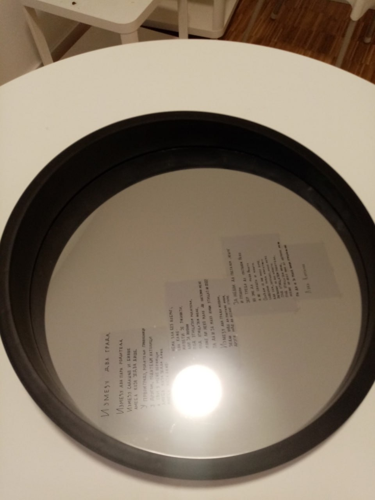

DOGAĐAJI
U našem centru organizujemo pozorišna čitanja (format koji je više od čitanja i obimom manji od
celovečernje predstave tj. čitalačko izvođenje sa glumačkom interpretacijom i određenim scenskim
rešenjima), izložbe, lekcije, radionice, seminare, projekcije filmova i razgovorne klubove na
različitim jezicima. Ovde možete videti datume predstojećih događaja i pročitati o prošlim.
Lekcija prof. Enise Uspenski
12.5.2024 16:00
Enisa Uspenski je cenjen sprski prevodilac sa ruskog jezika i redovna profesorka na
Fakultetu dramskih umetnosti u Beogradu.
Autorka je brojnih članaka i prevodilac dela A. S. Puškina, D. Harmsa, P. Florenskog, N.
Berđajeva... Uža sfera njenog naučno-istraživačkog rada je rusistika sa posebnim akcentom na
emigrantologiju, dostojevistiku, rusku dramu, pozorište, film i poeziju.
Španski razgovorni klub
18.5.2024 18:00
Španski razgovorni klub je prilika da vežbate konverzaciju sa izvornim govornikom! Klub vodi
Meksikanka Majra koja će vam pomoći da vodite razgovor na svakodnevne teme u društvu drugih
govornika, uz piće, grickalice i u druželjubivoj atmosferi našeg centra. Tema narednog kluba
je "Život u Beogradu - prednosti i mane". Za sva dodatna pitanja možete nam pisati na mejl
adresu.
Srpski razgovorni klub

19.5.2024 16:00
Tematski razgovorni klub na srpskom jeziku odvija se uživo, svake druge nedelje, u prijatnoj
atmosferi, uz čašu vina i sa srpskim gostima. Klub obično traje 3 sata, tokom kojih se
trudimo da govorimo sve vreme na srpskom (oni koji tek počinju da uče jezik mogu se slobodno
pridružiti, koristeći samo reči koje znaju, to je samo dobar trening i najvažnije je da vam
bude interesantno). Svaki klub ima svoju temu i za svaki dobijate pitanja za koja možete
unapred da se pripremite.
Više teksta
Oni koji imaju decu - mogu doći sa njima, postoji odvojena soba u
kojoj deca mogu crtati dok se mi družimo. Takođe, možete doći sa svojim kućnim ljubimcem,
ako ste sigurni da nije sklon sukobu sa drugim kućnim ljubimcima. Klub se fokusira na
razgovor (o različitim društveno interesantnim i važnim temama, od onih kao što su "Šta
posetiti u Srbiji?", "Mentalitet", "Hrana" do takvih kao što su "Kič", "Socijalne mreže" i
druge). Takođe uključuje kulturne događaje kao što je zajednička poseta bioskopu ili
razgovor o trenutnoj izložbi.
Radionica za decu "Srpska bajka"
25.5.2024 10:00
Radionica za decu u toku koje čitamo srpsku bajku, upoznajemo likove
kao što su zmaj,
aždaja i karakondžula, gledamo ilustracije u predivnoj knjizi "Prognana bića" M. Bodirogića,
učimo nove reči na srpskom, smišljamo i realizujemo u čarobnoj šumi radnju svoje bajke,
koristeći se funkcijama Vladimira Propa.
O Marti Grem i A. Tarkovskom: lekcija + radionica
26.5.2024
Naša prva "lekcija + radionica" posvećena je formi spirale u delima američkog koreografa
Marte Grem i ruskog reditelja Andreja Tarkovskog. Bazira se na članku "Spirala kao forma u
vremenu" objavljenom 2023. u moskovskom naučnom časopisu "Mladi naučnik - perspektivna
nauka". "Lekcija + radionica" je nov format koji se od klasičnog predavanja razlikuje
spontanijim, manje akademskim pristupom i praktičnom primenom izrečenog.
Više teksta
U prvih 15-ak
minuta iznosi se srž nečijeg istraživanja i potom se u grupama kroz zadatke i igru "testira"
ono što smo upravo čuli. Ova forma pogodna je za svakog koga zanimaju savremena istraživanja
u umetnosti, nove metode i načini posmatranja ili samo zabavno i interesantno provedeno
vreme u igri.
Pogledajte starije događaje
▼ Dnevnik prethodnih događaja ▼
Seminar "Menjačnica"
11.5.2024 18:00
Seminar za predavače srpskog jezika kao stranog pod nazivom "Menjačnica" jeste
jedinstveni
događaj tog tipa koji se izdvaja pre svega svojim konceptom. Naime, učešće u seminaru je
besplatno jer je model rada tzv. skill swap: svaki učesnik deli sa kolegama konkretan
gramatički problem sa kojim se susreće u svojoj predavačkoj praksi i u zamenu nudi jedan
svoj "kejs" tj. slučaj iz prakse u kojem je uspešno rešio neki drugi problem.
Više teksta
Umesto
finansijske razmene učešće se "plaća" razmenom saveta sa ciljem osnaživanja
kolegijalnosti i
povezivanja sa ostalim profesionalcima iz iste oblasti. U seminaru mogu učestvovati kako
filolozi tako i oni koji nemaju završene akademske studije ali imaju predavačkog
iskustva.
Prijave se šalju na mejl: miljana.cosic@kcemigrantka.com sa
naznakom "Prijava za seminar".
Pozorišno čitanje komada "Božić" autorke Ženje Berkovič.

10.1.2024. Smestivši biblijski siže u realije prepoznatljive savremenom kontekstu,
autorka se poigrava žanrom, tekstom, ritmom i smislom biblijske priče.
Izložba posvećena poeziji Luke Kurjačkog

17.12.2023. Luka je bio naš dramaturg i filolog, zaljubljenik u Japan, pesnik i još
mnogo
toga. Izložba je posvećena njegovoj pesmi "Između dva grada" (o odnosu sa Poljskom) i
vezama koje je imao sa Sankt Peterburgom u kojem je jedno vreme živeo i radio kao
profesor jezika.
Pozorišno čitanje komada "Bugistan" Luke Kurjačkog
17.12.2023. Pozorišno čitanje komada "Bugistan" mladog srpskog dramaturga Luke
Kurjačkog. Komad
"Bugistan - operacija raka u tri čina" govori o iskustvu kroz koje je dramaturg sam
prošao - u pitanju je operacija tumora mozga. Sazdavši zaseban jezik, baziran na
stvarnoj afaziji, autor nas vodi kroz ceo jedan izmišljeni svet - Bugistan, u kojem se
ogledamo i preispitujemo.
Više teksta
U igranju učestvuju glumci: Anton Smorodin (Kalužski teatar),
Kristina Kozub (Institut M. S. Shchepkina), Kiril Kozub (Teatat Vutkjuka), Olga
Kuvardina (Akademija Sankt Peterburg) Marina Baboshina (Krasnojarski TJUZ), Evgenij
Marder (Krasnojarski TJUZ), Aleksej Dvoeglazov (Aleksandrinski teatar), Ljubica Damčević
- vilonistkinja i performerka Dah teatra